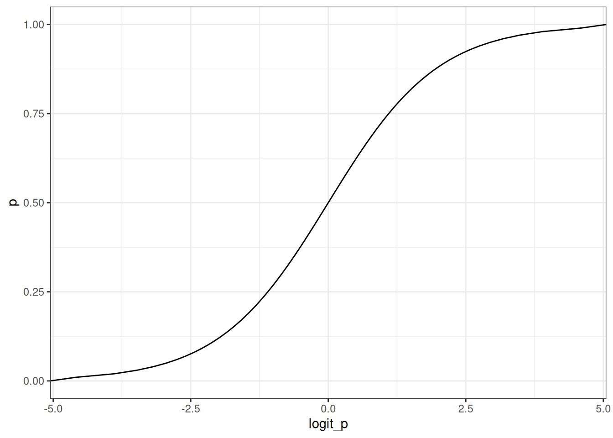
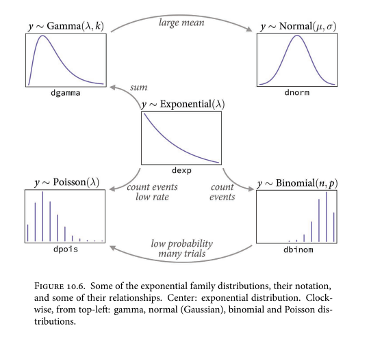
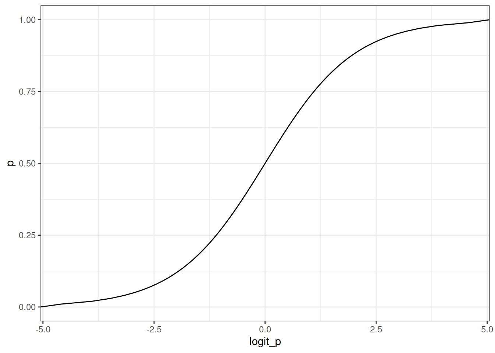
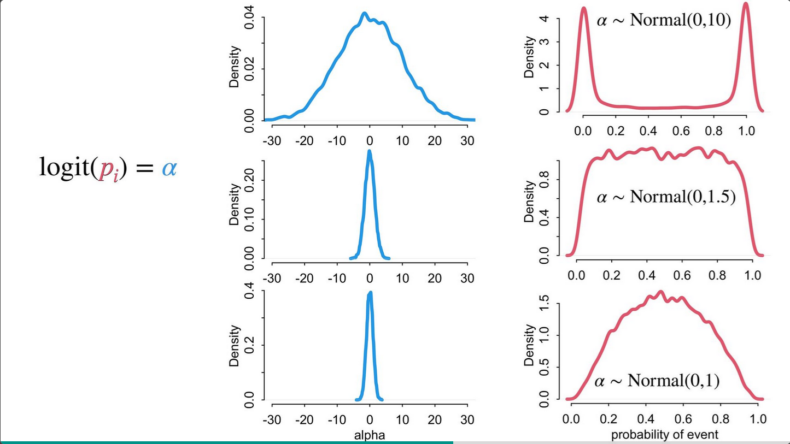
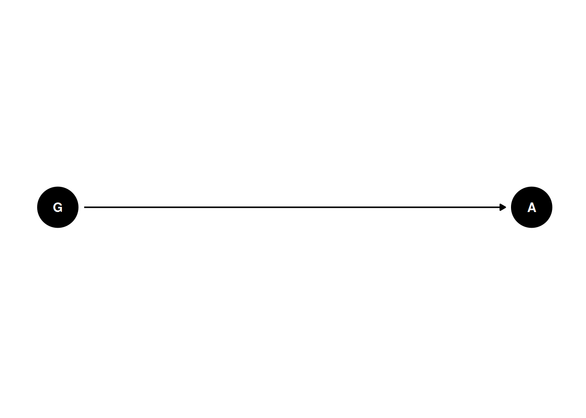
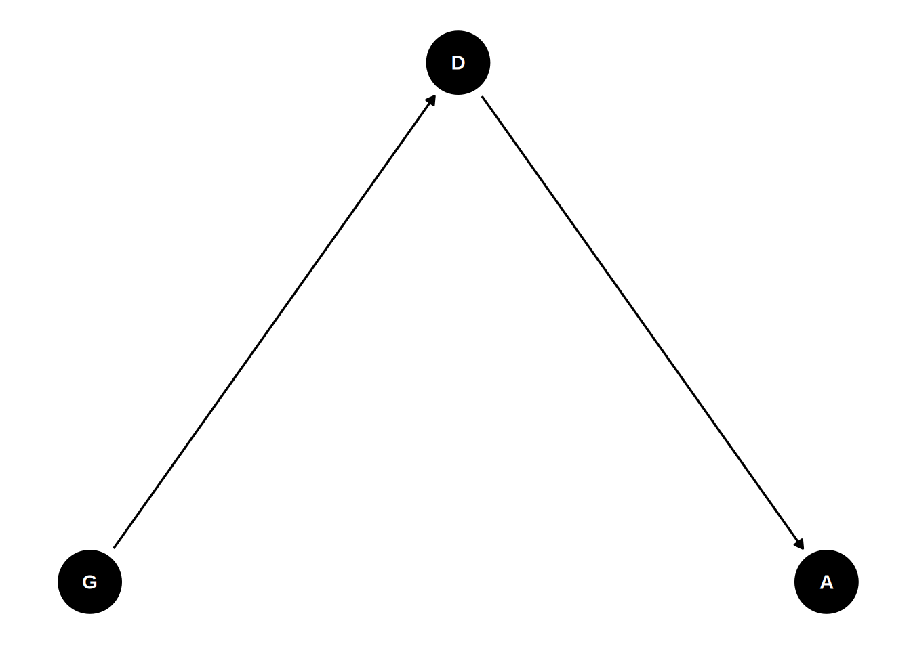
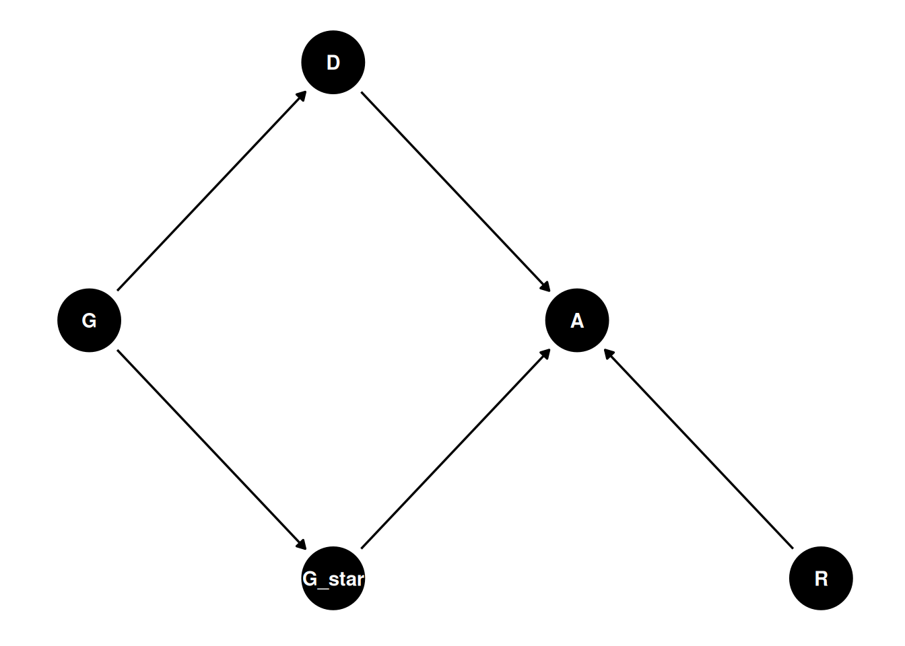
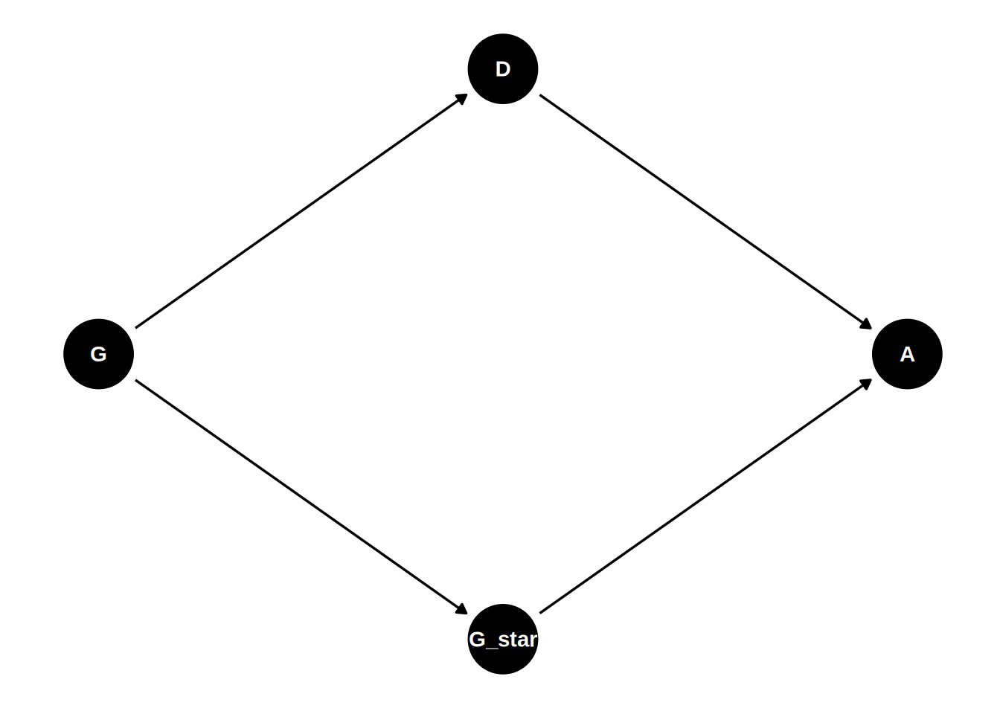

p <- seq(0, 1, 0.01)
ggplot(data.table(logit_p= logit(p), p = p)) +
geom_line(aes(logit_p, p))
Linear models: expected value is an additive combination of parameters
\[Y_{i} \sim Normal(\mu_{i}, \sigma)\] \[\mu_{i} = \alpha + \beta_{X} X_{i} + \beta_{Z} Z_{i}\]
Generalized linear models: expected value is some function of an additive combination of parameters
\[Y_{i} \sim Bernoulli(p_{i})\] \[f(p_{i}) = \alpha + \beta_{X} X_{i} + \beta_{Z} Z_{i}\]
In generalized linear models, all parameters interact because the outcome is bounded. Gaussian models are the only type of model where this is not true since the outcome is unbounded.
Distributions are matched to the constraints on observed variables. The link function is matched to this distribution.

Distribution you want to use to model an observed variable is governed by the constraints on observation. Eg. you can’t have negative counts. You can’t use some test to decide if your data are “Normal”.
Like tide prediction engines (analog computers), the gears inside the machine bear no resemblance to the observable predictions that they output
These estimates are bounded, eg. the probability of an event is restricted to 0-1.
Two options, that are equivalent for inference:
Bernoulli and binomial models most often use the logit link.
\(logit\) is the link function
\(logit(p_{i} = \alpha + \beta_{{X}} X_{i} + \beta_{Z} Z_{i})\)
\(logit^{-1}\) (logistic) is the inverse link function.
\(p_{i} = logit^{-1}(\alpha + \beta_{{X}} X_{i} + \beta_{Z} Z_{i})\)
Logit link is a harsh transformation
p <- seq(0, 1, 0.01)
ggplot(data.table(logit_p= logit(p), p = p)) +
geom_line(aes(logit_p, p))
The logit link compresses parameter distributions. Anything above +4 = almost always, anything below -4 = almost never.

See more here:
Traag, V.A. and Waltman, L., 2022. Causal foundations of bias, disparity and fairness. arXiv preprint arXiv:2207.13665.
coords <- data.frame(
name = c('G', 'D', 'A', 'G_star', 'R', 'U'),
x = c(1, 2, 3, 2, 4, 4),
y = c(0, 1, 0, -1, -1, 1)
)Is there gender discrimination in graduate admissions?
dagify(
A ~ G,
coords = coords
) |> ggdag(seed = 2, layout = 'auto') + theme_dag()
dagify(
D ~ G,
A ~ D,
coords = coords
) |> ggdag(seed = 2, layout = 'auto') + theme_dag()
Typically, department is considered a mediating variable. Departments differ in their number of applicants, number of accepted students, potential differences in applicants and acceptance by gender, etc
What does the “causal effect of gender” mean?
Really this is another variable - the perceived gender G*.
dagify(
A ~ R + G_star + D,
G_star ~ G,
D ~ G,
coords = coords
) |> ggdag(seed = 2, layout = 'auto') + theme_dag()
Which path represents “discrimination”?
These three types of discrimination require different estimators.
Changing the acceptance rate where acceptance differs by department and gender, pattern of differences in acceptance rates is the same in this simulated data. This illustrates the fundamental problem of determining if discrimination is occurring.
Generative model could be greatly improved:
Total causal effect of G
\(A_{i} \sim Bernoulli(p_{i})\)
\(logit(p_{i}) = \alpha[G_{i}]\)
\(\alpha = [\alpha_{1}, \alpha_{2}]\)
Direct causal effect of G
\(A_{i} \sim Bernoulli(p_{i})\)
\(logit(p_{i}) = \alpha[G_{i}, D_{i}]\)
\(\alpha = \begin{bmatrix} \alpha_{1, 1} & \alpha_{1, 2} \\ \alpha_{2, 1} & \alpha_{2, 2}\end{bmatrix}\)
Use inverse logit function to transform variables back on probability scale. Determine if known parameters are recovered by the model.
To use a binomial distribution, aggregate the long format data into acceptance sums for each gender and department. This is equivalent to using the original data with a Bernoulli distribution.
Back to the question: what’s the average direct effect of gender across departments?
This depends on the perception of gender on the admission officer
dagify(
A ~ G_star + D,
G_star ~ G,
D ~ G,
coords = coords
) |> ggdag(seed = 2, layout = 'auto') + theme_dag()
To calculate the causal effect of G*, we must average (marginalize) over the departments. Process: simulate as if all applicants are women, then simulate as if all applicants are men. Then compute the contrasts.
Post stratification is re-weighting estimates for a specific target population. Eg. at a different university, the distributions would differ, and we could predict how the consequences of intervention differ
How long did an event take to happen? Time-to-event.
Cannot ignore censored cases, where event never happened.
Adoption rates of black and non-black cats
Events: adopted, or something else (death, escape, censored)
Outcome variables: days to event. Appropriate distributions are exponential and gamma. Exponential arises from a single part that needs to fail before the so-called machine dies, whereas the Gamma distribution requires multiple parts to fail.
For simplest situation, time to adoption, this represents it:
\(D_{i} \sim Exponential(\lambda_{i})\)
\(p(D_{i} | \lambda_{i}) = \lambda_{i} exp(-\lambda_{i} D_{i})\)
But what about the censored cats?
Event happened = cumulative distribution, probability of event happening up to time x
Event didn’t happen = complementary cumulative distribution, probability event hasn’t occurred up to time x
\(D_{i} = 1 \sim Exponential(\lambda_{i})\)
\(D_{i} = 0 \sim Exponential-CCDF(\lambda_{i})\) (not-yet-adoptions)
\(\lambda_{i} = 1 / \mu_{i}\)
\(log \mu_{i} = \alpha_{CID[i]}\)